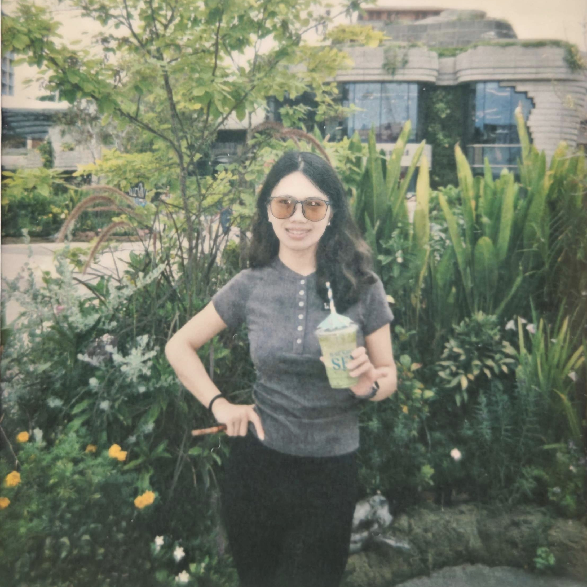

陈文倩 · Chen Wenqian
Chen Wenqian · Quinn
个人简介
Biography
陈文倩，清华大学教育学院 2024 级教育学硕士，研究方向聚焦教育政策与工程教育；本科以专业第一的成绩分流至长安大学地下水科学与工程「卓越工程师班」，连续三年位列专业前 5%，硕士期间 GPA 3.92/4，曾获清华之友—长寿英才奖学金，并参与《AI 通识应用手册》的编写与出版。本科至研究生阶段累计发表 SCI 论文 2 篇，申请国家专利 3 项，主持及参与国家级、省级、校级科研与创新项目 8 项；先后于威盛电子、中传未来、好未来教育担任产品相关职位，长期深耕 AI 研学、升学规划与 K12 教育产品方向，习惯以数据驱动需求洞察、以漏斗分析驱动产品迭代，致力于把研究方法论与产品实践紧密融合。
Wenqian Chen (Quinn) is a Beijing-based product manager candidate currently pursuing a Master's degree in Education at Tsinghua University (Class of 2027), with research interests in education policy and engineering education. She graduated as the top student in her major from Chang'an University's Excellent-Engineer program in Hydrogeology, ranking in the top 5% of her cohort for three consecutive years, and maintains a 3.92/4 GPA at Tsinghua. She has co-authored two SCI papers, filed three national patents, and led or contributed to eight national/provincial/university-level research projects. Across product internships at VIA Technologies, CMC Future, and TAL Education, she has built deep experience in AI-enabled learning products, college-admission planning, and K-12 content, consistently translating user research into measurable product iteration through funnel analytics and data-driven decision-making.
职业方向
Career Interests
- AI 教育产品 — AI 研学、智能陪学、个性化学习路径与多模态内容形态。
- 用户研究与需求洞察 — 用户访谈、竞品分析、用户画像、需求分层与 PRD 撰写。
- 数据驱动产品迭代 — 漏斗分析、A/B 测试、用户行为日志、留存与转化指标体系搭建。
- 内容运营与增长 — 升学规划、私域 SOP、活动策划与多渠道触达。
- AI Education Products — AI-enabled learning, personalized tutoring, multimodal content experiences.
- User Research & Discovery — interviews, competitive analysis, persona modeling, requirement triage, PRD authoring.
- Data-Driven Iteration — funnel analysis, A/B testing, behavioral logs, retention and conversion metrics.
- Content Operations & Growth — admissions planning, private-domain SOPs, event design, multi-channel reach.
联系方式
Contact
教育背景
Education
主修课程：教育政策分析、定量教育研究方法 (II)、工程人才创新能力发展、教育技术学、管理学、教育心理学、结构方程模型应用等。
Coursework: education policy analysis, quantitative methods in education (II), engineering-talent innovation, educational technology, management, educational psychology, structural equation modeling.
荣誉奖项：累计获国家级奖项 4 项、省级奖项 1 项、校级奖项 30 余项；包括奖学金 7 次、学科竞赛奖项 15 项、各类荣誉称号 13 次。
主修课程：概率论与数理统计 (99)、高等数学 (96)、大学计算机 (93)、统计学 (93)、水文数据分析 (97)、产学研实习（优秀）等。
Honors: 4 national-level, 1 provincial, 30+ university-level awards; 7 scholarships, 15 academic-competition awards, 13 honorary titles.
Coursework: probability & statistics (99), advanced math (96), computer science (93), statistics (93), hydrologic data analysis (97), industry-academia internship (excellent).
实习经历
Internship Experience
- 需求调研与分析：负责 AI 研学产品的竞品分析与用户调研，访谈 50+ 种子用户、梳理行业痛点，1v1 建立用户测评档案并持续跟进，厘清用户需求、产品功能与核心卖点，为产品设计与销售策略调整提供支持。
- 产品推进与研发：深度参与核心产品研发，协助完成 PRD 撰写、功能原型设计与线上题库搭建，推进产品服务体系优化迭代与上线测试，推动「清北学霸全科陪学服务」从 0 到 1 落地，提升用户签约率与留存率。
- 数据驱动迭代：协助建立产品上线后的用户数据监控体系，基于漏斗分析与用户行为日志，输出 AI 研学产品的优化方案。
- Discovery & analysis: ran competitive analysis and user research for an AI-learning product line; interviewed 50+ design partners, captured industry pain points, maintained 1-on-1 evaluation files to clarify needs, feature priorities, and core value props feeding product and sales strategy.
- Product development: contributed to flagship product builds — co-authored PRDs, designed functional prototypes, set up the online question bank, drove iteration and launch testing, and shipped the "Tsinghua/PKU full-subject tutoring" service from 0 → 1, raising signup and retention.
- Data-driven iteration: helped stand up the post-launch metrics pipeline; turned funnel analysis and behavioral logs into prioritized optimization proposals for the AI-learning suite.
- 内容运营与用户触达：负责升学规划产品的多渠道推广，独立撰写并分发 30+ 篇高阅读量推文，覆盖高考政策解读、志愿填报等议题。
- 转化漏斗优化：深度参与产品从曝光到转化的全流程，基于用户行为数据优化落地页文案、设置自动化企微 SOP 引导。
- 广告投放优化：运营 1000+ 人规模的账号，策划「学长学姐分享会」「志愿填报答疑」等 10+ 场活动，通过精细化运营提升用户转化。
- Content & reach: led multi-channel promotion for the admissions-planning product; authored and distributed 30+ articles on Gaokao policy interpretation and major-selection guidance, several with high readership.
- Funnel optimization: owned the impression-to-conversion path end to end; rewrote landing copy and built automated WeCom SOP nudges based on behavioral data.
- Acquisition & activation: ran 1,000+-member private-domain accounts; planned 10+ events ("alumni Q&A", "college-application clinics") that materially lifted conversion.
- 合作对接与任务拆解：将目标拆解为「数据收集 → 参数率定 → 模型验证 → 结果输出」全流程子任务，制定阶段性里程碑与分工表。
- 数据分析与模型迭代：运用 SPSS、Excel 等工具处理 1000+ 条数据，并基于合作方反馈利用 GMS 完成 3 轮水质评价模型迭代与优化。
- 项目落地与成果转化：基于数据分析结果输出可视化报告与可执行建议，相关成果被合作方及所在学院纳入水资源规划参考。
- Project structuring: decomposed the engagement into a four-phase pipeline (data collection → parameter calibration → model validation → reporting) with milestones and an explicit ownership matrix.
- Modeling & analysis: processed 1,000+ data points in SPSS/Excel and ran three iterations of the water-quality assessment model in GMS, incorporating partner feedback at each round.
- Delivery: produced a visualized analysis report with actionable recommendations; outputs were adopted by the partner organization and the school's water-resource planning references.
- 用户需求调研：协助教研团队完成 K12 语文课程内容研发，归纳 500+ 用户的核心需求，针对性优化社群运营策略。
- 数据驱动运营：分析家长群用户活跃度、课程续报转化率，输出周度数据报告，优化数据分析与效果复盘。
- 跨团队协作：对接主讲老师、运营团队推进课程优化需求，跟进需求从讨论到落地的全流程，积累跨角色协作经验。
- User research: supported curriculum R&D for K-12 Chinese language; synthesized core needs from 500+ users to refine community-operation strategy.
- Operations analytics: tracked parent-group engagement and course-renewal conversion; produced weekly metrics reports and post-mortems.
- Cross-functional execution: partnered with lead teachers and ops to drive curriculum-improvement requests from discussion to delivery.
科研经历
Research Experience
参与 SCI 论文 Impacts of Land Use/Land Cover Patterns on Groundwater Quality in the Guanzhong Basin of Northwest China 与 Hydrochemical Background Levels and Threshold Values of Phreatic Groundwater in the Greater Xi'an Region, China: Spatiotemporal Distribution, Influencing Factors and Implications to Water Quality Management（非第一作者），均见刊。硕士期间发表《卓越工程师何以卓越：基于英国工程师能力要求的文本分析》，撰写《以分类发展创建世界一流大学的中国道路》（第二作者）。
Co-author of Impacts of Land Use/Land Cover Patterns on Groundwater Quality in the Guanzhong Basin of Northwest China and Hydrochemical Background Levels and Threshold Values of Phreatic Groundwater in the Greater Xi'an Region: Spatiotemporal Distribution, Influencing Factors and Implications to Water Quality Management (both published). Master's-level papers: "What Makes the Excellent Engineer? A Text Analysis of UK Engineering Competency Standards" and "Creating World-Class Universities through Differentiated Development: A Chinese Path" (second author).
以第一发明人申请专利 2 项：《一种水文工程地质用地下水采集取样装置》《遥测地下水位监测仪》；以第二发明人申请专利 1 项《一种教育信息化多媒体设备》，均已受理。
First inventor on two patents — "Groundwater Sampling Device for Hydrogeological Engineering" and "Remote Groundwater-Level Monitor"; second inventor on "Multimedia Device for Education Informatization." All filings accepted.
《光催化剂的合成及在解聚木质素成芳香族化合物的应用》（国家级立项·一等奖结题）— 凭此参与第十二届「挑战杯」并获校重点资助。《地下水与土壤地球化学背景值研究》（国家级立项·二等奖结题）— 担任队长，统筹课题规划与推进，并以此参与第十三届「挑战杯」获校重点资助。《硬质化、非硬质化场地条件下降水自然力循环系统》（校级立项）— 作为核心成员参与实验与数据处理，已结题。
"Photocatalyst Synthesis for Lignin Depolymerization to Aromatic Compounds" — national-level grant, 1st-prize completion; further developed for the 12th Challenge Cup. "Background-Value Study of Groundwater & Soil Geochemistry" — national-level grant, served as team lead, 2nd-prize completion; supported entry into the 13th Challenge Cup. "Natural-Force Precipitation Cycle in Hard- vs. Soft-Surfaced Sites" — university-level grant, served as core member on experimentation and data analysis; project completed.
项目获陕西省团委重点立项资助。团队基于调研数据总结秦岭地区生态保护方案，最终形成《秦岭生态科学考察报告》。
Funded by the Shaanxi Communist Youth League. The team synthesized field survey data into an ecological-protection framework for the Qinling region, published as the Qinling Ecological Survey Report.
研一期间参与导师课题《工程类专业学位人才培养能力标准和质量认证体系研究》，已成功结题。
Contributed during the first year of master's studies to the advisor-led project "Competency Standards and Quality-Certification Systems for Engineering Professional-Degree Talent Cultivation," now completed.
荣誉奖项
Honors & Awards
累计获国家级奖项 4 项、省级奖项 1 项、校级奖项 30 余项；含奖学金 7 次、学科竞赛奖项 15 项、各类荣誉称号 13 次。代表性奖项如下：
4 national-level, 1 provincial, and 30+ university-level awards; including 7 scholarships, 15 academic-competition prizes, and 13 honorary titles. Selected awards:
学工与实践经历
Student Leadership & Practice
- 部门管理：分管研究生团委博士生讲师团，负责部门成员管理与任务分工，协助研团其他部门高效率推进与筹备重大活动。
- 活动组织：联合其他高校支教团开展青年主题宣讲，与咸阳市 6 所高中联动开展联合宣讲活动，累计受众覆盖 2000+。
- 同时担任清华大学研究生学生会学术部干事、博士生讲师团「立言计划」成员。
- Department leadership: oversaw the doctoral lecturer corps, managed members and task allocation, and supported other committees in scaling major events.
- Event organization: co-hosted youth-themed lectures with peer university teaching teams; coordinated joint events with six Xianyang high schools, reaching 2,000+ attendees.
- Concurrent roles: Graduate Student Union Academic Committee officer; "Liyan Initiative" doctoral lecturer corps member.
- 校级 — 长安通讯社编辑：累计撰稿 25,000+ 字，参与网络推送的排版与审核、采访、音频剪辑等工作 24 次，累计审稿 300+ 篇；2019-2020 学年获「党委学生宣传思想工作先进个人」荣誉称号。
- 校级 — 星火宣讲团讲师：累积在全国范围内线上线下开展并参与各类主题教育宣讲 100+ 场，打磨宣讲稿 150+ 份，开展经验交流会 50+ 场，覆盖全校 17 个院系，受众超过 6,000 人次，相关事迹报道 200+ 次。
- 院级 — 水环学院文艺部正部长：负责组织策划文艺晚会、风采展等大型活动，涵盖活动策划、流程设计及现场管理等全流程工作。
- 实践活动：作为队长带领团队完成长安大学优秀学子回母校招生宣传寒假社会实践（2020.11–2021.03），疫情期间面向低/中/高风险地区采取线上宣讲、线下宣传、录播分享 3 种方式，累计走访 23 所高中，团队获评「优秀实践队」；参与「关爱关中水土环境 · 助力生态文明建设」暑期社会实践（2021.07–2021.08）。
- Editor, Chang'an News Agency: contributed 25,000+ words; layout, review, interviewing, and audio editing across 24 publications; reviewed 300+ submissions; named "Outstanding Individual in Student Publicity Work" by the Party Committee (AY 2019-2020).
- Lecturer, Spark Lecture Corps: delivered or contributed to 100+ thematic lectures (online and in-person) nationally; refined 150+ lecture scripts and led 50+ experience-sharing sessions across 17 departments, reaching 6,000+ attendees with 200+ press mentions.
- Department Chair, Arts Division: led end-to-end planning, run-of-show, and on-site management for major events including the annual gala and showcase.
- Field practice: led the "alumni return for admissions outreach" winter program (2020.11–2021.03), running online lectures, on-site outreach, and recorded sessions tailored to risk-level zones during COVID; visited 23 high schools, earning the team an "Excellent Practice Team" designation. Contributed to the summer "Guanzhong Water-Soil Environment & Ecological Civilization" program (2021.07–2021.08).
技能 / 证书
Skills & Certifications
自我评价
Self-Evaluation
- 数据分析能力：熟练运用 SQL 进行数据查询与分析，能够为产品需求提供有力的数据支持。
- 团队协作能力：曾担任项目队长，统筹多项任务，具备较强的责任心与 owner 意识，能够高效推动需求从调研到落地的全流程。
- 实习时间适配：2027 年毕业；可在北京线下实习不少于三个月，每周到岗 4–5 天，三月可随时到岗。
- Analytics: proficient in SQL for query and analysis; able to bring rigorous data support to product decisions.
- Team & ownership: served as project lead across multiple programs; strong sense of ownership in driving requirements from discovery to delivery.
- Availability: graduating in 2027; available for on-site Beijing internships of three months or more, 4–5 days per week, with immediate start in March.